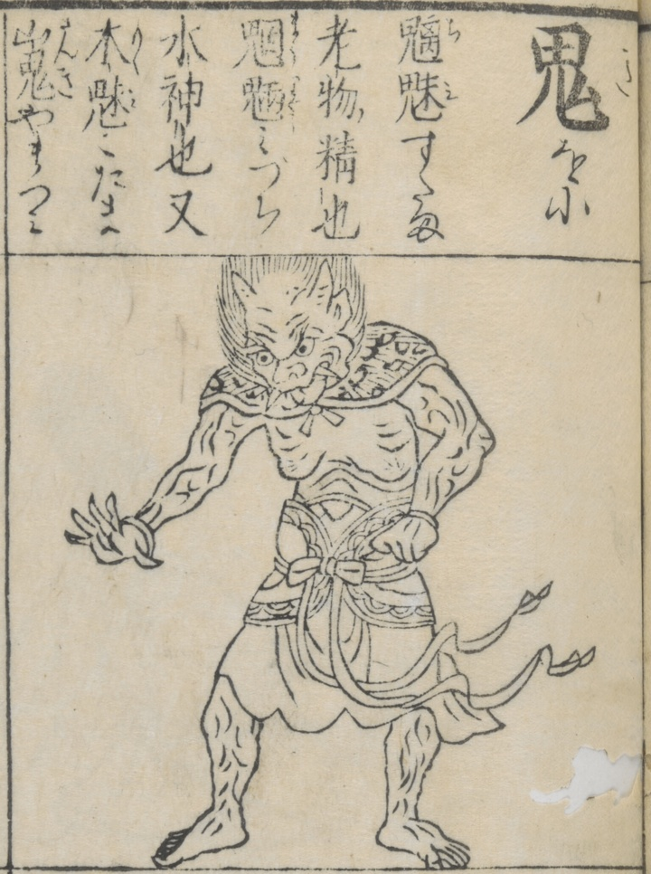

頭に2本の角、口に3本の牙が生えた鬼。上半身は裸で、腰布を巻いている。本文には「魑魅、すたま、老物ノ精也。魍魎、みづち、水神也。又、木魅、こたま、山鬼、やまづみ。」とあり。
著作者：中村惕齋／出典：親書誌：U426_nichibunken_0468：訓蒙圖彙；キンモウズイ／日付：2025／資源識別子：U426_nichibunken_0468_0001_0000
Copyright (c)2010- International Research Center for Japanese Studies, Kyoto, Japan. All rights reserved.